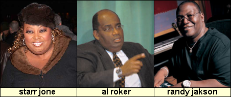
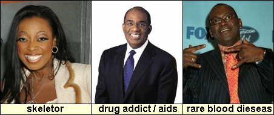

Branch 12: Gastric Bypass Surgery
be all ands ends of all of success regimin

what do these people haver in common.? they alls get gastric bypass surgery!
this breakthrough is only choice for fats people as you too busy eat cheeseburger
to fit into you daily routine. you maybe think "holey moley doug this is best
thing since slice bread"! but there is
slight downside. after:

gastric surgery have ill effect of making you look like you have some kind of physical defect / dieseas. this is only downside i assure you (pain and recorvery of surgery is like vaction time).